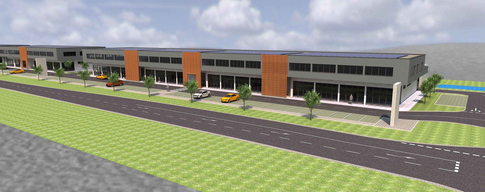
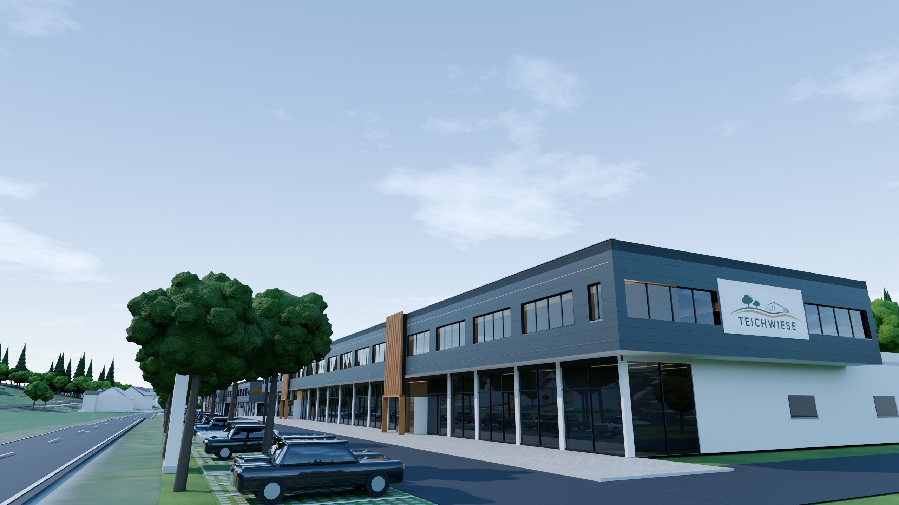
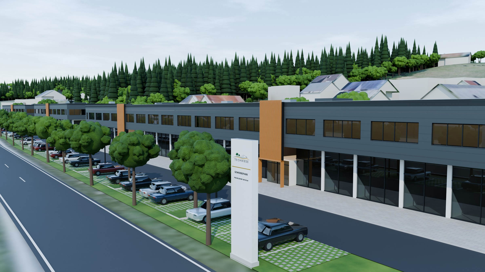
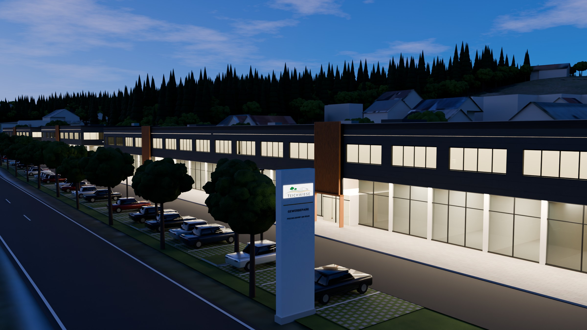

Gemeinsam verwenden
Die Asset-Bibliothek.
Ein zentraler Ort für Logo, Schrift und Bilder aller Entwürfe.
Bilder über GitHub hochladen ↗Erfordert GitHub-Schreibzugriff. Dateien auswählen, Commit auf main speichern. Die Veröffentlichung folgt automatisch, sobald Pages aktiviert ist. Neue Bilder anschliessend in der gewünschten Variante referenzieren.
Aa Bb
TEICHWIESE
Nunito Sans ExtraBold · 800
Schrift herunterladen
Ansicht 1
Bild herunterladen
Ansicht 2
Bild herunterladen

Ansicht 3
Bild herunterladen
Logo mit Obstbäumen
PNG herunterladen
3D-Modell · Hero
Bild herunterladen

3D-Modell · Übersicht
Bild herunterladen
3D-Modell · Panorama
Bild herunterladen
3D-Modell · B54
Bild herunterladen

3D-Modell · Abend
Bild herunterladen

3D-Modell · Einfahrt Nord
Bild herunterladen
3D-Modell · Eingang
Bild herunterladen3D-Modell (GLB)
Grundstück, Bauteile 1–4 und nahe Umgebung für Web-Viewer.
GLB herunterladen3D-Modell: Visualisierung nach Entwurf 3 (25.10.2025), keine Zusage zu Ausstattung, Flächen oder Zufahrten. Umgebung: Orthofoto © basemap.at (CC BY 4.0), © OpenStreetMap-Mitwirkende (ODbL), Terrain Tiles (Mapzen/AWS).